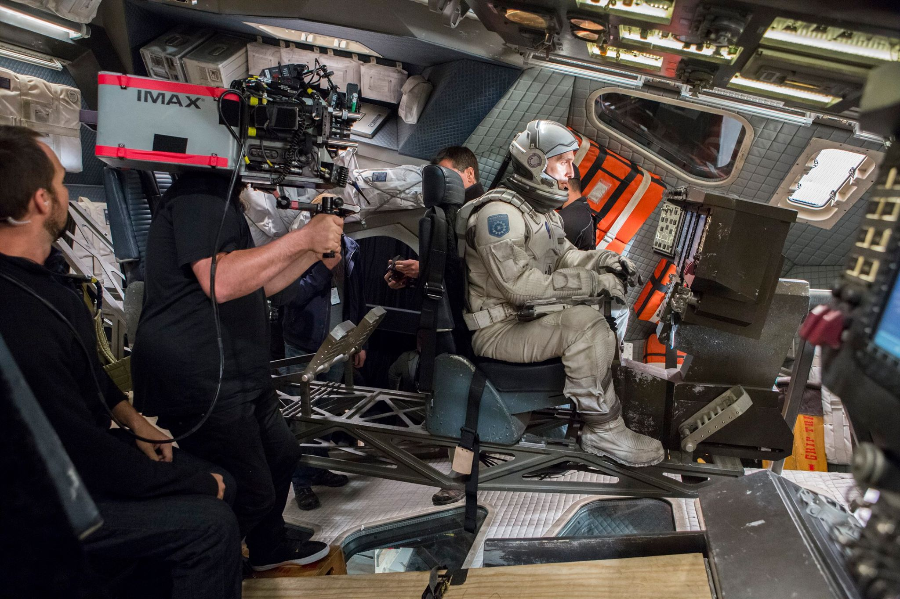
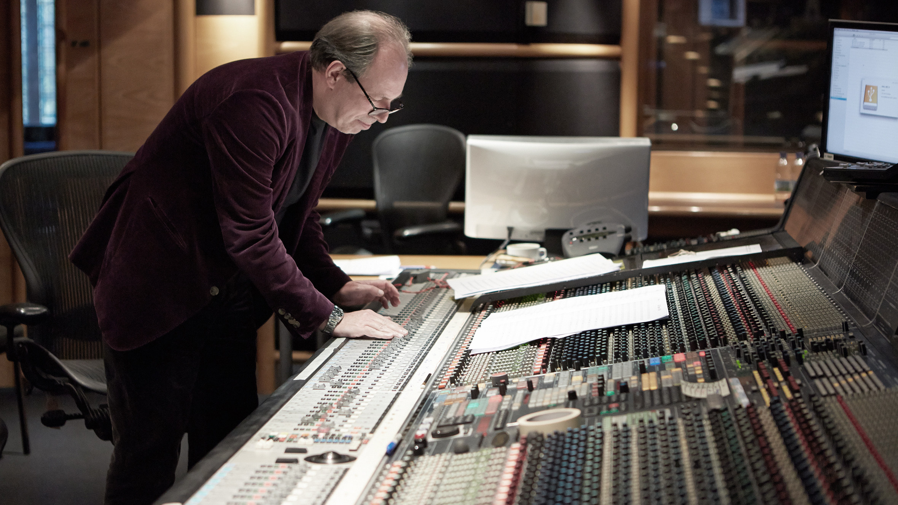
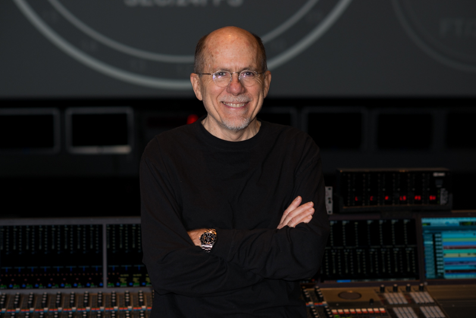
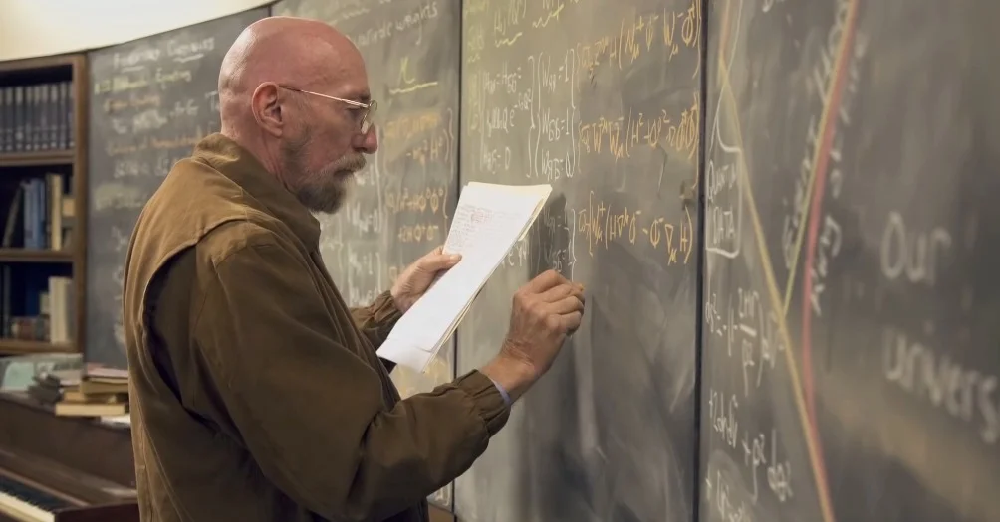
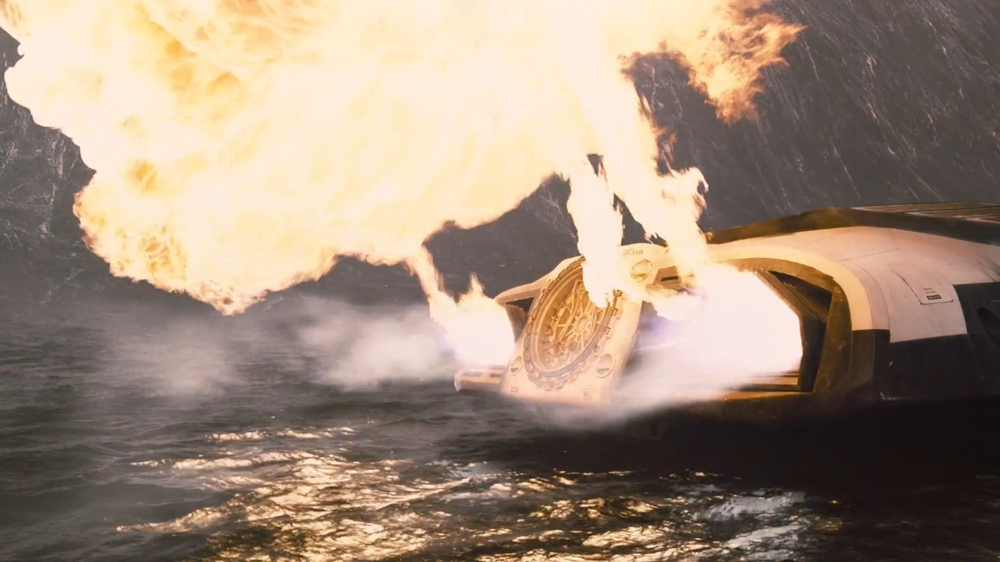
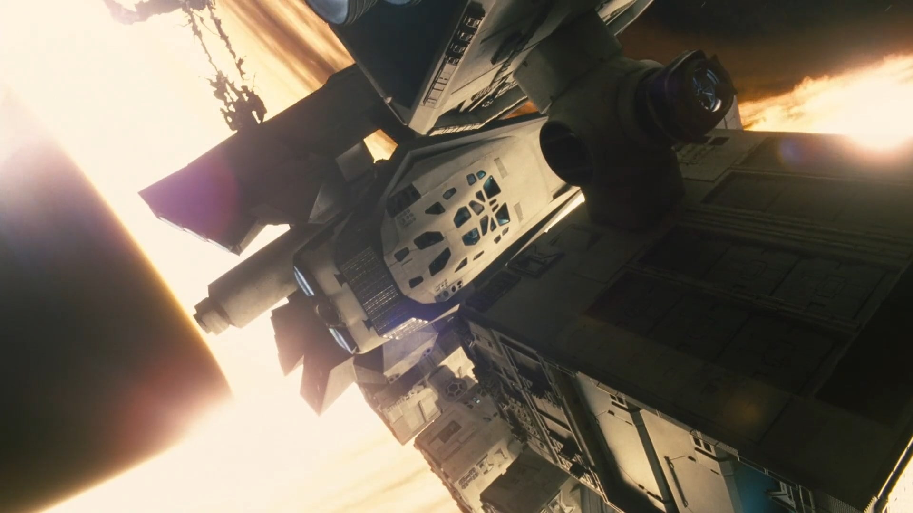

Dirigida por Christopher Nolan y estrenada en 2014, Interstellar no solo destaca por su narrativa épica y sus efectos visuales revolucionarios, sino también por su enfoque innovador en el sonido y la música, elementos clave para sumergir al espectador en su universo cósmico. Desde la banda sonora de Hans Zimmer hasta el tratamiento científico del sonido, cada detalle fue cuidadosamente planificado para crear una experiencia sensorial única.
La Música: Hans Zimmer y el Órgano del Cosmos
Christopher Nolan le entregó a Hans Zimmer un relato breve en lugar del guion completo sobre un padre que abandona a su hijo para salvar a la humanidad. Inspirado por esta idea emocional, Zimmer compuso la música sin ver la película, basándose únicamente en conceptos abstractos como el amor, el tiempo y la exploración. El resultado fue una partitura monumental, donde el órgano de iglesia se convirtió en el instrumento protagonista.
El Órganon Harrison & Harrison: Grabado en el Temple Church de Londres, su sonido profundo y vibrante evoca lo sagrado y lo infinito, conectando lo humano con lo cósmico. Zimmer lo combinó con una orquesta de 90 músicos para crear piezas icónicas como "Cornfield Chase" y "No Time for Caution".

Abbey Road y AIR Studios: La música se grabó en estos legendarios estudios, con técnicas clásicas para preservar la calidez análoga. Nolan evitó sintetizadores digitales, buscando un sonido "orgánico" que contrastara con el frío del espacio.
El Sonido: Ciencia y Silencio
El editor de sonido Richard King y Nolan trabajaron con el físico Kip Thorne para asegurar que el sonido fuera realista y a la vez emocional:
 Silencio en el Vacío: Como en 2001: Odisea del espacio, las escenas en el espacio exterior carecen de sonido, pero los efectos dentro de la nave (explosiones, motores) se transmiten como vibraciones mecánicas, dando una sensación de inmersión.
El Rugido de Gargantúa: El sonido del agujero negro se diseñó a partir de ecuaciones de ondas gravitacionales, mezclando frecuencias ultra-bajas con distorsiones orgánicas.
El Reloj de Murph: El tic-tac que guía a Cooper fue creado manipulando grabaciones de un reloj de péndulo real, simbolizando el tiempo y la conexión entre padre e hija.
Polémica y Arte: La Mezcla "Inaudible"
Nolan tomó una decisión audaz: en escenas clave (como el despegue de la nave o los diálogos entre Cooper y Murph), la música y los efectos ahogaron deliberadamente los diálogos. Esto generó críticas, pero fue una elección artística para priorizar la emoción sobre la claridad. El mensaje era claro: a veces, lo que se siente es más importante que lo que se escucha.
